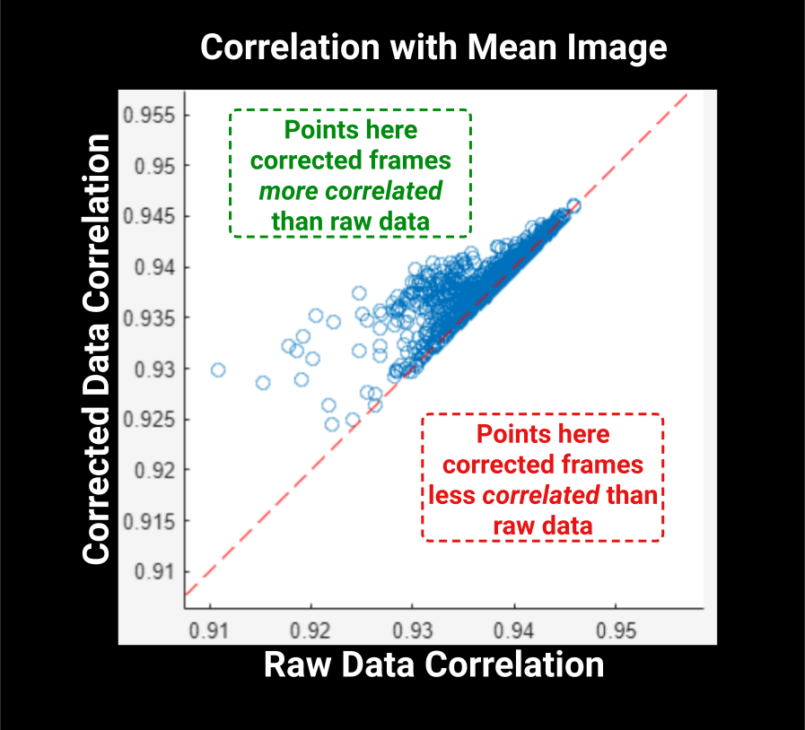

2. Registration#
Note
The terms motion-correction and registration are often used interchangably. Similary, non-rigid and peicewise-rigid are often used interchangably. Here, peicewise-rigid registration is the method to correct for non-rigid motion.
We use image registration to make sure that our neuron in the first frame is in the same spatial location as in frame N throughout the time-series.
2.1. Overview#
Disturbances or movement in our timeseries cause variations in pixel locations between frames called motion artifacts.
The motion artifacts present in our sample come in two flavors, rigid and non-rigid. See Types of Registration for more information.
{kind=link}
First, a template image is created by averaging the first 200 frames. This image is used to align each and every frame in the timeseries. As frames are aligned, the template is updated to more closely match the pixel locations of the previous frames.
A well motion-corrected movie will show that each frame is highly correlated with the mean image.
2.2. Inputs#
In addition to the default function inputs described in section Core Parameters, registration has a few important additional parameters.
start_plane
: The plane to start registration.
end_plane
: The plane to end registration.
options
: NormCorre Params Object
Note
All planes in between start_plane and end_plane will undergo registration sequentially.
2.2.1. NoRMCorre Parameters#
The last parameter for this step is a NoRMCorre parameters object. This is just a MATLAB structured array that expects specific values.
NoRMCorre provides the algorithm for registration and dictates the values in that struct.
There is an example parameters struct at the root of this project (Github).
Warning
Avoid the bidir options as we correct for bi-directional scaling ourselves.
The most important NoRMCorre parameters are:
grid_size: Determines how many patches your image is split into. The smaller the patch, the more precise the registration, with a tradeoff being increased compute times.max_shift: Determines the maximum number of pixels that your movie will be translated in X/Y.fr: The frame rate of our movie, which is likely different than the 30Hz default.correct_bidir: Attempts to correct for bi-directional scan offsets, a step that was performed in assembly.
A note on max_shift
For timeseries where the FOV is sparsely labeled or a frame is corrupted, the registration process of two neighboring patches can produce very different shifts, which can lead to corrupted registered frames.
We limit the largest allowed shift with the max_shift parameter.
If you see large single-frame spikes, try decreasing the max-shift parameter (Default is \(10μm\)).
2.3. Rigid Registration#
Rigid registration is accomplished by giving NoRMCorre no variable for grid_size,
so it defaults to the size of your image and thus only processing a single patch encompassing the entire field-of-view.
Note
The pipeline uses rigid registration internally to first create a template. This template downsampled and used to obtain the most accurate mean image for alignment.
Ideally, you want registration parameters in units of real-world values.
For example, rather than specifying a max_shift in units of pixels, use the pixel-resolution metadata to calculate a max_shift as ~1/2 the size of the neuron:
plane_name = fullfile("path/to/raw_tif");
metadata = read_metadata(plane_name);
% assuming a typical cortical neuron size of $15μm$.
max_shift = 7.5/metadata.pixel_resolution
We can then use this value in our own parameters struct with the help of read_plane():
% default dataset name
% depends on your input for the `ds` parameter in subsequent steps
dataset_name = '/Y';
plane_number = 1;
Y = read_plane(plane_name, 'ds', dataset_name, 'plane', plane_number);
% empty grid_size results in rigid-registration
options_rigid = NoRMCorreSetParms(...
'd1',size(Y, 1),...
'd2',size(Y, 2),...
'bin_width',200,... % number of frames to initialze the template
'max_shift', round(7.5/pixel_resolution), ... % still useful in non-rigid
);
2.4. Non-rigid Registration#
To perform non-rigid registration, you must specify the size of the patches you want to split the FOV into.
Typical patch sizes for \(512x512\) movies are \(32x32\), which would lead to \(512/32=16\) blocks that will be motion-corrected in parallel.
options_rigid = NoRMCorreSetParms(...
'd1',size(Y, 1),...
'd2',size(Y, 2),...
'bin_width',200,... % number of frames to initialze the template
'max_shift', round(20/pixel_resolution), ... % still useful in non-rigid
);
2.5. Outputs#
Just like assembly outputs, registration outputs to .h5 format.
Registration outputs have the following groups:
/Y
: Takes the name of the ds parameter. This group contains the 2D timeseries.
/Ym
: The mean image of the motion-corrected movie. Each image is averaged over time to produce the mean pixel intensity.
/shifts
: A 2xN column vector containing the number of pixels in X and Y that each frame was shifted.
Example: Plot X/Y Shifts in MATLAB:
x_shifts = shifts(:,1) % represent pixel-shifts in *x*
y_shifts = shifts(:,2) % represent pixel-shifts in *y*
2.6. Validate Outputs#
Validation metric figures are placed in your save_path as figures/registration_metrics_plane_N.
{kind=link}
The pipeline saves 4 files / z-plane for you to quickly evaluate registration results in your save_path/figures/ as registration_metrics_plane_N.
Internally, the pipeline first create a “template” using rigid registration.
Each frame of the timeseries is aligned to this frame.
The distance needed to shift these pixels to most closely align with the template is computed by locating the maximum of the cross-correlation between the each and every frame and the template.

Pixels that are highly correlated over the timecourse of an experiment are stationary in the image. Proper registration should increase the correlation between neighboring pixels.
Validation metrics rely on good signal!
The correlation metrics operate on each individual frame of the timeseries. As such, they depend on the quality of the registration and noise level but also on the level of neural activity.
Be weary of correlation metrics showing good registration on data with lots of noise or little signal.

{kind=link}
The above image shows these correlations. Closer to 1 (the top of the graph) indicates high correlation and a more stationary image.
The high degree of overlap between rigid/non-rigid registration indicates our movie did not benefit from non-rigid motion correction.
This could be due to too large of a grid_size or a general lack of non-uniform motion.

Tip
A quick way to see if registration was effective is to compare the two mean images, looking for differences in the “blurryness” between them.
{kind=link}